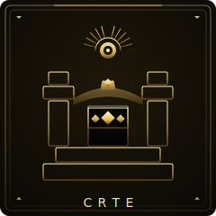

CRTE • Consolidado / Reactivo / Tech-driven / Experimental

CRTE: El Experimento Controlado
"Pilotemos bien antes de escalar."
Tools consolidadas, experimentos controlados. Pero reactivo a tendencias, tech impulsando sin alineación de negocio. Base sólida necesita dirección.
C
Estructura
R
Orientación
T
Liderazgo
E
Integración
✓ Tus Fortalezas
- Stack consolidado
- Experimentos estructurados
- Gobernanza IT activa
- Seguridad abordada
- Listo para escalar
✗ Tus Puntos Ciegos
- Reactivo no estratégico
- Tech sin negocio
- Experimentos sin valor
- Lento piloto a producción
- Faltan business cases
Entregables
Artefactos que Necesitas
Conectar experimentos técnicos con resultados de negocio.
Formulario Intake
Solicitudes estructuradas de negocio.
Ejemplo
Problema: [Desc]
Costo: $X/año
Resultado: [Medible]
Sponsor: [Nombre]Pipeline Experimentos
Criterios claros graduación.
Ejemplo
POC: 2 semanas
Piloto: 6 semanas
Producción: ROI+Matching Negocio
Emparejar experimentos con sponsors.
Ejemplo
Experimento: Doc AI
Sponsor: Ops legal
Métrica: 50% más rápidoDashboard Portfolio
Todos los experimentos y valor.
Ejemplo
Activos: 8
Producción: 3
Valor: $1.4MTu Camino
Hoja de Ruta 90 Días
Cambiar de experimentos reactivos a estrategia proactiva.
1
Conectar
Días 1-30Vincular experimentos a negocio.
Tareas Clave
Sem 1: Auditar alineación
Sem 2: Lanzar formulario intake
Sem 3: Emparejar con sponsors
Sem 4: Matar experimentos huérfanos
✓ Hito
Todos los experimentos con sponsor.
2
Optimizar Pipeline
Días 31-60Acelerar graduación.
Tareas Clave
Sem 5: Documentar pipeline
Sem 6: Encontrar cuellos de botella
Sem 7: Proceso fast-track
Sem 8: Graduar primer piloto
✓ Hito
Pipeline optimizado. Primera graduación.
3
Ir Proactivo
Días 61-90De reactivo a roadmap.
Tareas Clave
Sem 9: Lanzar dashboard
Sem 10: Alinear con prioridades
Sem 11: Presentar valor
Sem 12: Asegurar presupuesto proactivo
✓ Hito
Roadmap estratégico. Hacia CPTE.
¿Listo para Avanzar?
El AI Strategy Sprint te da un roadmap en 2 semanas.
Explorar
Otros Tipos
SRTE
Piloto del Caos
SRTB
Pensador Idealista
SPTE
Sobre-Ingeniero
SPTB
Iniciador Ambicioso
SRTI
Éxito Accidental
SRBI
Héroe Shadow IT
SPTI
Laboratorio Rebelde
SPBI
Movimiento de Base
CRTB
Juego de la Espera
CPTE
Utopía Tech
CPTB
Doc de Estrategia
CRTI
Máquina Eficiente
CRBI
Mesa de Servicio
CPTI
Casi Llega
CPBI
Líder Estratégico